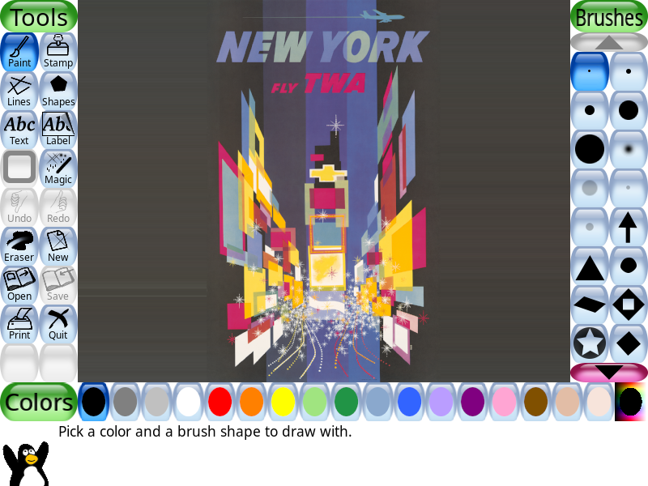

By David Klein
This is a very abstract piece of art. It uses sans-serif font instead of serif or monospace font. The font is also Bold and Italic but more italic. There are a lot of rectangles and vibrant colors. There are sparkles and for some reason a plane looking like AA Flight 11.
The lines are not very horizontal but are more diagonal. The sparkles are many different colors. It looks like it was
made in mspaint. There is a building in the background. The lines at the bottom and multicoloured and curvy.
I think it is very insensitive for this 1950s artist to have a plane in a picture of New York. There are two buildings next to
the plane. This is obviously a reference to the Twin Towers which were destroyed on
The art is really ugly it looks like someone made it in TuxPaint in fact I remade the entire picture in TuxPaint:
The snowflakes are just brushed on like a stamp. The plane is an obvious overlay. And the rectangles are the worst part. There is no rhyme or reason for them. Because of this I hath decideth to giveth this pictureth a 9th/11th.